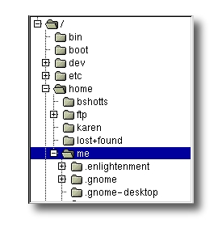

The first thing we need to learn to do (besides just typing) is how to navigate the file system on our Linux system. In this chapter we will introduce the following commands:
我們需要學習的第一件事（除了打字之外）是如何在 Linux 檔案系統中跳轉。 在這一章節中，我們將介紹以下命令：
pwd - Print name of current working directory
cd - Change directory
ls - List directory contents
pwd — 打印出當前工作目錄名
cd — 更改目錄
ls — 列出目錄內容
Like Windows, a Unix-like operating system such as Linux organizes its files in what is called a hierarchical directory structure. This means that they are organized in a tree-like pattern of directories (sometimes called folders in other systems), which may contain files and other directories. The first directory in the file system is called the root directory. The root directory contains files and subdirectories, which contain more files and subdirectories and so on and so on.
類似於 Windows，一個“類別 Unix” 的作業系統，比如說 Linux，以分層目錄結構來組織所有檔案。 這就意味著所有檔案組成了一棵樹型目錄（有時候在其它系統中叫做資料夾）， 這個目錄樹可能包含檔案和其它的目錄。檔案系統中的第一級目錄稱為根目錄。 根目錄包含檔案和子目錄，子目錄包含更多的檔案和子目錄，依此類別推。
Note that unlike Windows, which has a separate file system tree for each storage device, Unix-like systems such as Linux always have a single file system tree, regardless of how many drives or storage devices are attached to the computer. Storage devices are attached (or more correctly, mounted) at various points on the tree according to the whims of the system administrator, the person (or persons) responsible for the maintenance of the system.
注意(類別 Unix 系統)不像 Windows ，每個儲存裝置都有一個獨自的檔案系統。類別 Unix 作業系統， 比如 Linux，總是隻有一個單一的檔案系統樹，不管有多少個磁碟或者儲存裝置連線到計算機上。 根據負責維護系統安全的系統管理員的興致，儲存裝置連線到（或著更精確些，是掛載到）目錄樹的各個節點上。
Most of us are probably familiar with a graphical file manager which represents the file system tree as in Figure 1. Notice that the tree is usually shown upended, that is, with the root at the top and the various branches descending below.

圖1: 由圖形化檔案管理器顯示的檔案系統樹
大多數人都可能熟悉如圖1所示描述檔案系統樹的圖形檔案管理器。注意， 通常這是一棵 倒置的樹，也就是說，樹根在最上面，而各個枝幹在下面展開。
However, the command line has no pictures, so to navigate the file system tree we need to think of it in a different way.
然而，命令列沒有這樣的圖片，所以我們需要把檔案系統樹想象成別的樣子（而不是這張圖片）。
Imagine that the file system is a maze shaped like an upside-down tree and we are able to stand in the middle of it. At any given time, we are inside a single directory and we can see the files contained in the directory and the pathway to the directory above us (called the parent directory) and any subdirectories below us. The directory we are standing in is called the current working directory. To display the current working directory, we use the pwd (print working directory) command.
把檔案系統想象成一個迷宮形狀，就像一棵倒立的大樹，我們站在迷宮的中間位置。 在任意時刻，我們處於一個目錄裡面，我們能看到這個目錄包含的所有檔案， 以及通往上面目錄（父目錄）的路徑，和下面的各個子目錄。我們所在的目錄則稱為 當前工作目錄。我們使用 pwd（print working directory(的縮寫)）命令，來顯示當前工作目錄。
[me@linuxbox ~]$ pwd
/home/me
When we first log in to our system (or start a terminal emulator session) our current working directory is set to our home directory. Each user account is given its own home directory and when operating as a regular user, the home directory is the only place the user is allowed to write files.
當我們首次登入系統（或者啟動終端模擬器會話）後，當前工作目錄是我們的家目錄。 每個使用者都有他自己的家目錄，當用戶以普通使用者的身份操控系統時，家目錄是唯一 允許使用者寫入檔案的地方。
To list the files and directories in the current working directory, we use the ls command.
列出一個目錄包含的檔案及子目錄，使用 ls 命令。
[me@linuxbox ~]$ ls
Desktop Documents Music Pictures Public Templates Videos
Actually, we can use the ls command to list the contents of any directory, not just the current working directory, and there are many other fun things it can do as well. We’ll spend more time with ls in the next chapter.
實際上，用 ls 命令可以列出任一個目錄的內容，而不只是當前工作目錄的內容。 ls 命令還能完成許多有趣的事情。在下一章節，我們將介紹更多關於 ls 的知識。
To change your working directory (where we are standing in our tree-shaped maze) we use the cd command. To do this, type cd followed by the pathname of the desired working directory. A pathname is the route we take along the branches of the tree to get to the directory we want. Pathnames can be specified in one of two different ways; as absolute pathnames or as relative pathnames. Let's deal with absolute pathnames first.
要更改工作目錄（此刻，我們站在樹形迷宮裡面），我們用 cd 命令。輸入 cd, 然後輸入你想要去的工作目錄的路徑名。路徑名就是沿著目錄樹的分支 到達想要的目錄期間所經過的路線。路徑名可透過兩種方式來指定，一種是絕對路徑， 另一種是相對路徑。我們先來介紹絕對路徑。
An absolute pathname begins with the root directory and follows the tree branch by branch until the path to the desired directory or file is completed. For example, there is a directory on your system in which most of your system’s programs are installed. The pathname of the directory is /usr/bin. This means from the root directory (represented by the leading slash in the pathname) there is a directory called “usr” which contains a directory called “bin”.
絕對路徑開始於根目錄，緊跟著目錄樹的一個個分支，一直到達所期望的目錄或檔案。 例如，你的系統中有一個目錄，大多數系統程式都安裝在這個目錄下。這個目錄的 路徑名是 /usr/bin。它意味著從根目錄（用開頭的“/”表示）開始，有一個叫 “usr” 的 目錄包含了目錄 “bin”。
[me@linuxbox ~]$ cd /usr/bin
[me@linuxbox bin]$ pwd
/usr/bin
[me@linuxbox bin]$ ls
...Listing of many, many files ...
Now we can see that we have changed the current working directory to /usr/bin and that it is full of files. Notice how the shell prompt has changed? As a convenience, it is usually set up to automatically display the name of the working directory.
我們把工作目錄轉到 /usr/bin 目錄下，裡面裝滿了檔案。注意 shell 提示符是怎樣改變的嗎？ 為了方便，通常終端提示符自動顯示工作目錄名。
Where an absolute pathname starts from the root directory and leads to its destination, a relative pathname starts from the working directory. To do this, it uses a couple of special symbols to represent relative positions in the file system tree. These special symbols are “.” (dot) and “..” (dot dot).
絕對路徑從根目錄開始，直到它的目的地，而相對路徑開始於工作目錄。 為了做到這個（用相對路徑表示）， 我們在檔案系統樹中用一對特殊符號來表示相對位置。 這對特殊符號是「.」(點) 和「..」(點點)。
The “.” symbol refers to the working directory and the “..” symbol refers to the working directory’s parent directory. Here is how it works. Let's change the working directory to /usr/bin again:
符號「.」指的是工作目錄，”..” 指的是工作目錄的父目錄。下面的例子說明怎樣使用它。 讓我們再次把工作目錄切換到 /usr/bin：
[me@linuxbox ~]$ cd /usr/bin
[me@linuxbox bin]$ pwd
/usr/bin
Okay, now Let's say that we wanted to change the working directory to the parent of /usr/bin which is /usr. We could do that two different ways. Either with an absolute pathname:
好了，比方說我們想更改工作目錄到 /usr/bin 的父目錄 /usr。可以透過兩種方法來實現。可以使用以下絕對路徑名：
[me@linuxbox bin]$ cd /usr
[me@linuxbox usr]$ pwd
/usr
Or, with a relative pathname:
或者， 也可以使用相對路徑：
[me@linuxbox bin]$ cd ..
[me@linuxbox usr]$ pwd
/usr
Two different methods with identical results. Which one should we use? The one that requires the least typing!
兩種不同的方法，一樣的結果。我們應該選哪一個呢？ 選輸入量最少的那個！
Likewise, we can change the working directory from /usr to /usr/bin in two different ways. Either using an absolute pathname:
同樣地，從目錄 /usr/ 到 /usr/bin 也有兩種途徑。可以使用絕對路徑：
[me@linuxbox usr]$ cd /usr/bin
[me@linuxbox bin]$ pwd
/usr/bin
Or, with a relative pathname:
或者，也可以用相對路徑：
[me@linuxbox usr]$ cd ./bin
[me@linuxbox bin]$ pwd
/usr/bin
Now, there is something important that I must point out here. In almost all cases, you can omit the “./”. It is implied. Typing:
有一件很重要的事，我必須指出來。在幾乎所有的情況下，你可以省略”./”。它是隱含的。輸入：
[me@linuxbox usr]$ cd bin
does the same thing. In general, if you do not specify a pathname to something, the working directory will be assumed.
實現相同的效果。如果不指定一個檔案的路徑，那它被預設為在當前工作目錄下。
In table 3-1 we see some useful ways the current working directory can be quickly changed.
在表3-1中，列舉出了一些快速改變當前工作目錄的有效方法。
| Shortcut | Result |
|---|---|
| cd | Changes the working directory to your home directory. |
| cd - | Changes the working directory to the previous working directory. |
| cd ~user_name | Changes the working directory to the home directory of user_name. For example, cd ~bob will change the directory to the home directory of user “bob.” |
| 快捷鍵 | 執行結果 |
|---|---|
| cd | 更改工作目錄到你的家目錄。 |
| cd - | 更改工作目錄到先前的工作目錄。 |
| cd ~user_name | 更改工作目錄到使用者家目錄。例如, cd ~bob 會更改工作目錄到使用者“bob”的家目錄。 |
Important Facts About Filenames
Filenames that begin with a period character are hidden. This only means that ls will not list them unless you say ls -a. When your account was created, several hidden files were placed in your home directory to configure things for your account. Later on we will take a closer look at some of these files to see how you can customize your environment. In addition, some applications place their configuration and settings files in your home directory as hidden files.
Filenames and commands in Linux, like Unix, are case sensitive. The filenames “File1” and “file1” refer to different files.
Linux has no concept of a “file extension” like some other operating systems. You may name files any way you like. The contents and/or purpose of a file is determined by other means. Although Unix-like operating system don’t use file extensions to determine the contents/purpose of files, some application programs do.
Though Linux supports long filenames which may contain embedded spaces and punctuation characters, limit the punctuation characters in the names of files you create to period, dash, and underscore. Most importantly, do not embed spaces in filenames. If you want to represent spaces between words in a filename, use underscore characters. You will thank yourself later.
關於檔名的重要規則
以「.」字元開頭的檔名是隱藏檔案。這僅表示，ls 命令不能列出它們， 用 ls -a 命令就可以了。當你建立帳號後，幾個配置帳號的隱藏檔案被放置在 你的家目錄下。稍後，我們會仔細研究一些隱藏檔案，來訂製你的系統環境。 另外，一些應用程式也會把它們的配置檔案以隱藏檔案的形式放在你的家目錄下面。
檔名和命令名是大小寫敏感的。檔名 “File1” 和 “file1” 是指兩個不同的檔名。
Linux 沒有“副檔名”的概念，不像其它一些系統。可以用你喜歡的任何名字 來給檔案起名。檔案內容或用途由其它方法來決定。雖然類別 Unix 的作業系統， 不用副檔名來決定檔案的內容或用途，但是有些應用程式會。
雖然 Linux 支援長檔名，檔名可能包含空格，標點符號，但標點符號僅限 使用 “.”，“－”，下劃線。最重要的是，不要在檔名中使用空格。如果你想表示詞與 詞間的空格，用下劃線字元來代替。過些時候，你會感激自己這樣做。